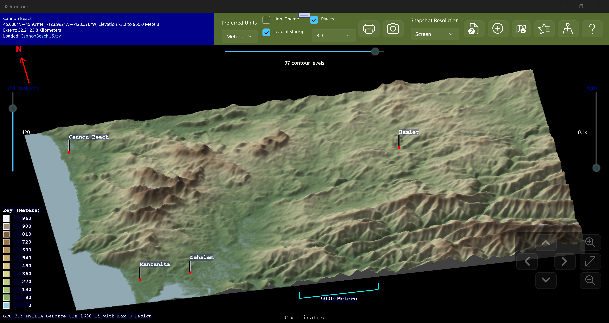
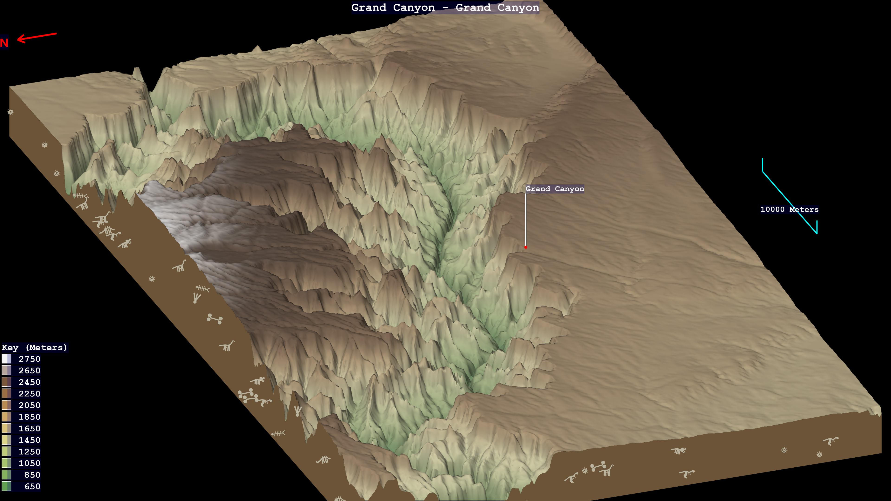

🖥️
KLO Free Software
Below are a few Windows-based tools for BBC Microcomputer enthusiasts,
followed by some Windows GUI apps. I hope you find them fun or useful, and please
let me know what you think, or if you have suggestions for new features, bug fixes
or other improvements.
Getting the BBC Micro running again led me to write some tools for viewing BBC disk images,
tokenised BASIC files, and data files, and for working with BBC Micro Compressed ROM
Filing System images, which squeeze multiple files into a single 16 KB "sideways ROM".
These are explained in more detail below, and have links to their own help and download pages.
This is a Windows WinUI 3 GUI application for packing files into a Compressed ROM Filing System sideways ROM image, and extracting them back out. Compatible with comprom.pl v2.10 by Greg Cook.
Windows
WinUI 3
Microsoft Store
BBC Micro
Free
Here is BeebRFSMaker packing a set of BBC Micro files into a 16 KB sideways ROM image:

This is the corresponding command-line version, designed for use in batch files and build pipelines. It shares the same compression engine as BeebRFSMaker but runs standalone with no GUI required.
Windows
Command Line
MSI Installer
BBC Micro
Free
C:\LocalOnly\RFS> BeebRFSTool pack .\BeebFiles NewRFSCompr.rom
BeebRFSTool v2026-06-08_16:11 - BBC Micro ROM Filing System (RFS) Pack, List, and Extract Tool by Kara Ottewell
Compatible with both standard RFS and Greg Cook's compressed RFS "comprom" format v2.10
Packing with compression enabled (compressed RFS) to NewRFSCompr.rom.
Title : "CompressedRFS"
Copyright : "KLO 2026"
Version string : "(2026-06-08 17:28)"
Catalog title : "*CompRFS*"
+---+------------+----------+----------+-------+-------+------+------+
| # |Name |Load |Exec |Raw |Compr. |% Orig| Inf? |
+---+------------+----------+----------+-------+-------+------+------+
| 1)|aaa_txt |&00000000 |&00000000 | 44 | 30 |68.2% | |
| 2)|bcdefghijk |&00000000 |&00000000 | 442 | 263 |59.5% | |
| 3)|Defende |&00005000 |&00008023 | 4785 | 2754 |57.6% |(.inf)|
| 4)|DefenMC |&00001900 |&00000E00 | 9121 | 7598 |83.3% |(.inf)|
| 5)|test_nocom |&00000000 |&00000000 | 44 | 38 |86.4% | |
| 6)|Zeddy_txt |&00000000 |&00000000 | 167 | 145 |86.8% | |
+---+------------+----------+----------+-------+-------+------+------+
ROM Uncompressed: 14163 bytes
ROM Compressed : 10858 bytes
ROM Overhead : 1958 bytes (header + stub + dictionary + digraphs)
ROM Total : 16384 bytes (12816 padded to full &4000 size)
ROM Space Used : 12816 bytes (78% utilised)
ROM Image Saved: NewRFSCompr.rom
Three command-line utility programs for viewing BBC Micro files or disk images.
Windows
Command Line
Microsoft Store
BBC Micro
Free
I wanted some command-line utilities to display the content of .dsd files, and decode
BBC BASIC files along with "PRINT#"-type BBC data files, so I wrote them as console
applications using .NET. The utilities are:
- BBCBasicToText — display a tokenised, binary BBC Micro BASIC file as text, HTML, or bbcode.
- BBCDataFileToText — show BBC
PRINT# type data files as text, HTML, or bbcode.
- BBCReadDiskImage — display
*CAT-style output of .DSD or .SSD disk images, with the ability to export files individually and dump sectors.
All three tools can produce colour output — strings, keywords, and so forth are coloured differently —
and can output plain text (in colour when writing to a command prompt window), bbcode, or HTML.
10 REM New version of 'INTRO' from
20 REM Welcome pack
30 REM By John Coll & Andrew Gordon
40 ON ERROR GOTO 630
50 ENVELOPE 1,1,-RND(50),-RND(50),-RND(45),255,255,255,127,0,0,-127,127,0
60 SOUND 1,1,255,255
70 DIM COM%11
80 M0=650:M1=500:M2=708:M3=104:M4=288:M5=550:M6=720:M7=450:M8=5
90 MODE5
100 VDU5
110 VDU23,255,255,255,255,255,255,255,255,255
120 GCOL0,135
130 CLG
140 VDU18,0,129,24,128;128;1152;896;16,18,0,135,24,256;256;1024;768;16,26
150 FORI%=M1 TO M2 STEP M3:PROCSWOOSH(M0):PROCLETTER:NEXT
160 $COM%="DISC SYSTEM"
[Snip rest of "Welcome" BASIC program]
Windows Apps
Here are some of the Windows apps, both UWP and WinUI 3, that I have been working on.
The first is a contour map generator, and the second is a Mandelbrot/Julia set explorer
which lets you save favourite points, and export PNGs of the plots.
KOContour reads in elevation data files from your computer, or elevation servers such as the
Open Topo Data and
OpenTopography servers,
and creates contour maps from them.
Windows
UWP
Microsoft Store
Free
I was looking for a contour map of various places but couldn’t find a simple, free one that did what I wanted.
So, I decided to write my own and use it to figure out how to submit things to the Windows Store. The result was KOContour.

It comes with known places including all the world capitals, along with US state and Canadian province capitals, and you can supplement
these by adding your own places, by either right-clicking the map to generate a list of suggestions, or entering the data yourself.
There are four display modes, and your selected choice is remembered across sessions:
- Lines — the classic contour map, each level drawn as a coloured line.
- Gradient Shade — the map is filled with a smooth colour gradient that blends from one
contour level to the next.
- Block shade — each contour band is filled with a single solid colour, giving a stepped,
"layer-cake" look.
- 3D — the terrain is drawn as a shaded three-dimensional relief surface that you can rotate
and zoom.
The colours, and various other appearance-related items, are configurable from the colour scheme choice dialog.

KOBrot is an interactive explorer for the Mandelbrot and Julia sets — zoom into the fractal,
paint it with a choice of colour maps, and watch the matching Julia set update live as you move the pointer.
Windows
UWP
Microsoft Store
Free
Having enjoyed writing KOContour, I wanted to try my hand at a very different
kind of graphics, so I wrote KOBrot, a Mandelbrot/Julia set explorer.

You can zoom in using the mouse pointer or touch screen, and can pinch-to-zoom with the latter. You can step back and forward
through your zoom history, and recolour the picture on the fly using a colour-wheel rainbow, the colour-blind-friendly Viridis,
or a colour-popping random palette. Every point on the Mandelbrot set has its own Julia set, and KOBrot draws it live as you move the pointer
around.
When you find a view worth keeping, save it to your favourites, complete with a title and creator tag, and
reload it exactly as you left it. You can save your discoveries as UHD snapshot pictures under your "Pictures" folder. There's
plenty to explore in your fractal journey using KOBrot!
My PGP Public Key is available on key servers like the Hockeypuck OpenPGP keyserver or the keys.openpgp.org key server under my key ID 6D1A2D5536CD052E50B96A8F595E7CC0A343AEAA. You can obtain my email address from that, if you wish to contact me with comments.